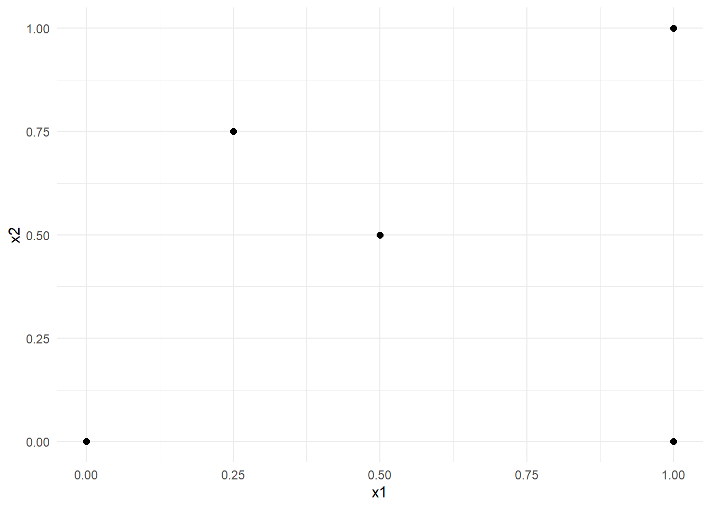
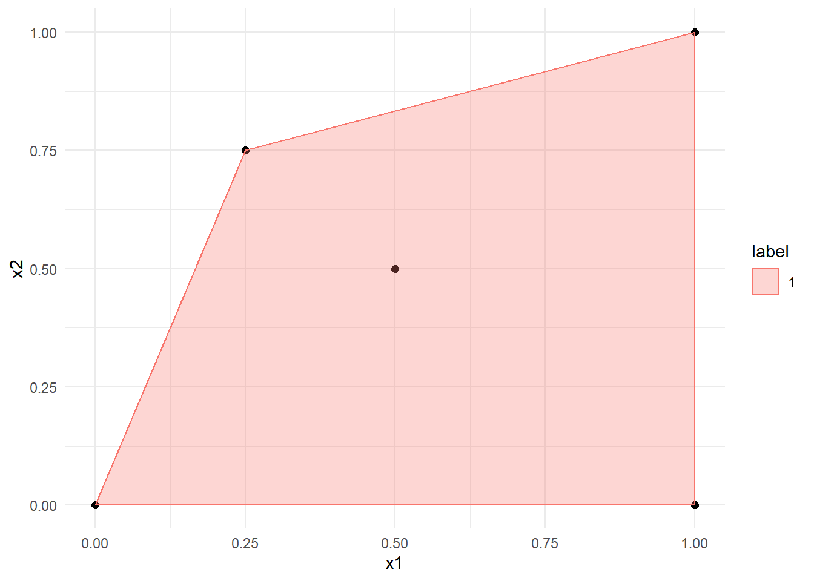

library("tidyverse")
library("ggtext")7 Maximum Margin Classifier
7.1 Introduction
Linear maximum margin classifiers which are also known as linear support vector machines allow us to classify binary data using a geometric approach. In two dimensions, we can use a simple line that separates the classes (under the assumption that they are indeed separable) and additionally maximizes the margins between those classes. In higher dimensions, the line is replaced by a hyperplane.
The goal of this chapter is to gain an intuition about how such a line can be derived visually and analytically.
Throughout the exercises, the following libraries are used for creating figures:
7.2 Exercises
Exercise 7.1 (Visual derivation) To solve the first exercise, you can either draw everything in a hand sketched figure, or create your own figures with the {ggplot} library. Consider the following data set comprised of ten data points and two classes with labels -1 and 1.
data <- tibble(x = c(-1,-1,0,0,1,2,2,2.5,3,4),
y = c(-1,1,1,0,0,2.5,2,3,2.5,4),
label = factor(c(rep(1,5),rep(-1,5)))
)Generate a scatter plot visualizing the data points and their respective classes. Hint: You can visualize the classes using colors or shapes.
To find the optimal separation line geometrically, it is often useful to consider the convex hull of the dataset. Start out by drawing the convex hull in the figure generated in Exercise 1.
A note on convex hullsRecall, that the convex hull of a set of points \(X\) is defined as the minimal convex set containing \(X\). To create a convex hull with ggplot, consider the following example:
Example: Let \(X = \{(0,0)^\top,(0.25,0.75)^\top,(0.5,0.5)^\top,(1,1)^\top,(1,0)^\top\}\).
data_example <- tibble(x1 = c(0,0.25,0.5,1,1), x2 = c(0,0.75,0.5,0,1), label = factor(rep(1,5)) ) p_example <- data_example %>% ggplot(aes(x=x1,y=x2)) + geom_point(size = 2)+ theme_minimal() p_example
Then, the convex hull can be generated as follows:
hull_example <- data_example %>% group_by(label) %>% slice(chull(x1,x2)) p_example + geom_polygon(data = hull_example, aes(x=x1, y=x2,color = label, fill = label), alpha = 0.3)
The line with the maximal margin is defined by the line with minimal distance between the points of the different classes. Find these two points on the convex hulls you have just drawn/plotted and label them with \(c_1\) and \(c_{-1}\) (for the classes with label \(1\) and \(-1\), respectively). Note that every point on a convex hull is a possible candidate, and they do not necessarily need to correspond with the data points.
Connect the points \(c_1\) and \(c_{-1}\) with a line perpendicular to the points.
The separation line passes through the center of the line you have just drawn and is orthogonal to it, i.e., the two lines enclose a 90° angle. Draw/plot the separation line \(s\), the line \(l_1\) that passes through the support vectors of the class with label \(1\), and the line \(l_{-1}\) that passes through the support vector of the class with label \(-1\).
Add two arbitrary points from each class to the feature space, so that the separation line \(s\) found in the previous exercise does not change.
Start fresh with the same data and add a new data point \(x_5\) that belongs to a class of your choice so that the new margin between the two classes is equal to \(1\). As before, sketch/plot the convex hull, the two points points \(\tilde c_1\) and \(\tilde c_{-1}\) on the convex hull, and the three lines \(\tilde l_1,\tilde l_{-1}\), and \(\tilde s\) as in Exercise 1.-4.
Exercise 7.2 (Analytical derivation of a maximum margin classifier) From the previous exercise, we know what kind of separation line we can expect when using support vector machines and how to find it graphically. However, determining the separation line analytically is difficult, even for the simple problem of Exercise 7.1. The number of variables and conditions make this task impractical for a “Pen and Paper” exercise. However, to still get a basic idea of the linear SVM algorithm, we consider an even simpler problem with only two points \(x_1,x_2\in\mathbb{R}^2\) that each belongs to their own class. The two points are given by
\[\begin{align*} x_1 &= \begin{pmatrix} 1\\1 \end{pmatrix} \in \omega_1 = \left\{x_i:T_i = 1\right\},\\ x_2 &= \begin{pmatrix} 2\\3 \end{pmatrix} \in \omega_{-1} = \left\{x_i:T_i = -1\right\}. \end{align*}\]
Since both points are the single representative of their respective classes, they are also the support vectors. Furthermore, they are located on the margin. The goal of this exercise is to find the parameters of a separation line with maximal margin.
Recall from the lecture, that the dual problem is given by
\[\begin{equation*} L_D = \sum_{i=1}^{2} \alpha_i - \frac{1}{2}\sum_{i=1}^{2}\sum_{j=1}^{2}\alpha_i\alpha_jT_iT_jx_i^\top x_j \end{equation*}\]
subject to the constraint
\[ \sum_{i=1}^{2} \alpha_iT_i = 0. \]
Technically, we also need the constraint \(\alpha_i \geq 0,\, \forall i\). However, to keep things simple, we assume that this is satisfied here.
Set up the Lagrange function by plugging all the values into \(L_D\) and the constraint above. Subsequently, simplify the terms.
To maximize the term \(L_D\) under the constraint \[ \sum_{i=1}^{2} \alpha_iT_i = 0, \] we need an additional Lagrange function with Lagrange multiplier \(\lambda\)
\[\begin{equation*} \Lambda (\alpha_1,\alpha_2,\lambda) = L_D + \lambda \left(\sum_{i=1}^2 \alpha_i T_i\right). \end{equation*}\]
Maximize this function and show that the optimal values are given by
\[\begin{equation*} \alpha_1^* = \frac{2}{5} \quad \mathrm{and}\quad \alpha_2^* = \frac{2}{5}. \end{equation*}\]
It is sufficient to only calculate the potential extrema since we will also assume for them to be actual extrema.
Based on the previous results, calculate the line parameters \(w_1, w_2\), and $ b$.
Add the line to the figure below.
data_ex02 <- tibble(x1= c(1,2), x2 = c(1,3), "T" = factor(c(1,-1))) data_ex02 %>% ggplot(aes(x=x1,y=x2, color = T)) + geom_point(size = 3) + xlim(1,2) + ylim(1,3) + labs( color = "Labels" )+ theme_minimal()Suppose we want to classify a new point \(x_3 = (2,2)^\top\). Assign this point to the correct class, both visually and using the decision function \[ f(\tilde x) = \mathrm{sign}\left(\sum_{i=1}^{2} \alpha_i^*T_i(x_i^\top \tilde x+b)\right). \]
7.3 Solutions
Solution 7.1 (Exercise 7.1).
-
cols <- c("1" = "#212C58", "-1" = "#F58216") title_text <- glue::glue( "Classes <span style='color:{cols['1']};'> ω<sub>1</sub> (\u25CF) </span> and <span style='color:{cols['-1']};'> ω<sub>-1</sub>(\u25A0) </span> ") p <- ggplot() + geom_point(data = data, aes(x=x,y=y,color = label, shape = label), size = 2)+ scale_color_manual(values = cols) + scale_shape_manual(values = c(15, 16)) + labs( title = title_text )+ theme_minimal()+ theme( plot.title = element_markdown(), legend.position = "None" )+ coord_fixed() p -
hull <- data %>% group_by(label) %>% slice(chull(x,y)) p1 <- p + geom_polygon(data = hull, aes(x=x, y=y,color = label, fill = label), alpha = 0.3)+ scale_fill_manual(values = cols) p1
-
df_annotate <- tibble( label = c( "<span style='color:red;'> c<sub>1</sub></span>", "<span style='color:red;'> c<sub>-1</sub></span>" ), x = c(0.5,2), y = c(0.5,2), hjust = c(-0.3, 1.2) ) df_c <- tibble(x = c(0.5,2), y = c(0.5,2)) p2 <- p1 + geom_point(data = df_c, aes(x=x,y=y), shape = c(8,8), size = 3, color = c("red","red"))+ geom_richtext(data = df_annotate, aes(x=x, y=y, label=label, hjust = hjust), fill = NA, label.color = NA) p2 -
df_line <- tibble(x1 = 0.5, x2 = 2, y1 = 0.5, y2 = 2) p3 <- p2 + geom_segment(data = df_line, aes(x = x1, y = y1, xend = x2, yend = y2), color = "red") p3 -
df_annotate_l <- tibble( label = c( "<span style='color:grey50;'> l<sub>1</sub></span>", "<span style='color:grey50;'> l<sub>-1</sub></span>", "<span style='color:grey50;'> s</span>" ), x = c(-0.75,3.5,0.25), y = c(1.5,1,2.5) ) p4 <- p3 + geom_abline(slope = -1, intercept = 2.5, color = "grey50")+ geom_abline(slope = -1, intercept = 1, color = "grey50", linetype = 2)+ geom_abline(slope = -1, intercept = 4, color = "grey50", linetype = 2)+ geom_richtext(data = df_annotate_l, aes(x=x, y=y, label=label), fill = NA, label.color = NA) p4 -
title_text <- glue::glue( "Classes <span style='color:{cols['1']};'> ω<sub>1</sub> (\u25CF) </span> and <span style='color:{cols['-1']};'> ω<sub>-1</sub>(\u25A0) </span>, <br> and additional points <span style='color:{cols['1']};'> x<sub>1</sub>,x<sub>2</sub>(\u25B2) </span> and <span style='color:{cols['-1']};'> x<sub>3</sub>,x<sub>4</sub>(\u25C6) </span>" ) df_x <- tibble(x = c(-0.5,0,2.5,3), y = c(-0.5,0.5,2.5,3), label =factor(c(1,1,-1,-1))) p5 <- p4 + geom_point(data = df_x, aes(x=x,y=y, color = label), shape = c(17,17,18,18), size = 3) + labs( title = title_text ) p5 -
title_text <- glue::glue( "Classes <span style='color:{cols['1']};'> ω<sub>1</sub> (\u25CF) </span> and <span style='color:{cols['-1']};'> ω<sub>-1</sub>(\u25A0) </span>." ) #Define new Data and Hull data_new <- rbind(data,c(1,2,1)) hull_new <- data_new %>% group_by(label) %>% slice(chull(x,y)) #New Annotations ## Annotate c df_annotate_new <- tibble( label = c( "<span style='color:red;'> c<sup>~</sup><sub>1</sub></span>", "<span style='color:red;'> c<sup>~</sup><sub>-1</sub></span>" ), x = c(0.5,2), y = c(2,2), hjust = c(-0.3, 1.2) ) df_c_new <- tibble(x = c(1,2), y = c(2,2)) ## Annotate l and s df_annotate_l_new <- tibble( label = c( "<span style='color:grey50;'> l<sup>~</sup><sub>-1</sub></span>", "<span style='color:grey50;'> l<sup>~</sup><sub>1</sub></span>", "<span style='color:grey50;'> s<sup>~</sup></span>" ), x = c(2.25,0.75,1.4), y = c(3,3,3) ) # Generate new plot p_new <- ggplot() + geom_point(data = data_new,aes(x=x,y=y,color = label, shape = label),size = 2)+ geom_polygon(data = hull_new, aes(x=x, y=y,color = label, fill = label),alpha = 0.3)+ geom_point(data = df_c_new, aes(x=x,y=y), shape = c(8,8), size = 3, color = c("red","red"))+ geom_richtext(data = df_annotate_new, aes(x=x, y=y, label=label, hjust = hjust), fill = NA, label.color = NA)+ geom_vline(xintercept = 1.5, color = "grey50")+ geom_vline(xintercept = 1, color = "grey50", linetype = 2)+ geom_vline(xintercept = 2, color = "grey50", linetype = 2)+ geom_richtext(data = df_annotate_l_new, aes(x=x, y=y, label=label), fill = NA, label.color = NA)+ scale_fill_manual(values = cols)+ scale_color_manual(values = cols) + scale_shape_manual(values = c(15, 16)) + labs( title = title_text )+ theme_minimal()+ theme( plot.title = element_markdown(), legend.position = "None" )+ coord_fixed() p_new
Solution 7.2 (Exercise 7.2).
Setting up the Lagrange function:
\[\begin{align*} L_D &= (\alpha_1+\alpha_2) - \frac{1}{2}( \alpha_1^2\cdot 1^2\cdot 2 + \alpha_1\cdot\alpha_2\cdot1\cdot-1\cdot 5 + \alpha_2\cdot\alpha_1\cdot-1\cdot1\cdot5 + \alpha_2^2\cdot(-1)^2\cdot 13)\\ &= (\alpha_1+\alpha_2) - \frac{1}{2}(2\cdot\alpha_1^2-2\cdot 5\cdot \alpha_1\cdot \alpha_2+13\cdot\alpha_2^2)\\ &= \alpha_1+\alpha_2 - \alpha_1^2+ 5\cdot \alpha_1 \cdot\alpha_2 - \frac{13}{2}\alpha_2^2 \end{align*}\]
Setting up the constraint
\[ \alpha_1-\alpha_2 = 0 \]
In order to optimize \[ \Lambda(\alpha_1,\alpha_2,\lambda) = \alpha_1+\alpha_2 - \alpha_1^2+ 5\cdot \alpha_1 \cdot\alpha_2 - \frac{13}{2}\cdot\alpha_2^2 +\lambda\cdot(\alpha_1-\alpha_2), \] first calculate the partial derivatives with respect to \(\alpha_1,\alpha_2,\lambda\):
\[\begin{align} \frac{\partial \Lambda}{\partial\alpha_1} &= 1-2\cdot\alpha_1+5\cdot\alpha_2 +\lambda \tag{1}\\ \frac{\partial \Lambda}{\partial\alpha_2} &= 1+5\cdot\alpha_1- 13\cdot\alpha_2 -\lambda \tag{2}\\ \frac{\partial \Lambda}{\partial\lambda} &= \alpha_1-\alpha_2 \tag{3} \end{align}\]
In order to obtain an extrema, we have to set each of the equations above to \(0\) and solve them for \(\alpha_1\) and \(\alpha_2\).
Adding the terms \((1)\) and \((2)\), we obtain
\[\begin{align*} &1-2\cdot\alpha_1+5\cdot\alpha_2 +\lambda +1+5\cdot\alpha_1- 13\cdot\alpha_2 -\lambda &&= 0\\ \iff &2+3\cdot\alpha_1-8\alpha_2 &&=0 \\ \iff &\alpha_1 &&=\frac{8\cdot\alpha_2-2}{3} \end{align*}\]
Plugging \(\alpha_1\) into \((3)\) then yields
\[\begin{align*} &\frac{8\cdot\alpha_2-2}{3} - \alpha_2 &&= 0\\ \iff &\frac{5\cdot\alpha_2-2}{3}&&= 0\\ \iff &\alpha_2 &&= \frac{2}{5} \end{align*}\]
Since we also need to satisfy \(\alpha_1 - \alpha_2 = 0\) and thus \(\alpha_1 = \alpha_2\), we can deduce \(\alpha_1 = \frac{2}{5}\).
Therefore \(\alpha_1^* = \alpha_2^* = \frac{2}{5}\).
The first order conditions require
\[w = \sum_{i=1}^{2}\alpha_i\cdot T_i x_i, \]
i.e., \[ \begin{pmatrix} w_1\\w_2 \end{pmatrix} = \alpha_1^*\cdot T_1 \cdot x_1 + \alpha_2^*\cdot T_2 \cdot x_2 = \begin{pmatrix} \frac{2}{5} \\ \frac{2}{5} \end{pmatrix} - \begin{pmatrix} \frac{4}{5} \\ \frac{6}{5} \end{pmatrix} = -\begin{pmatrix} \frac{2}{5} \\ \frac{4}{5} \end{pmatrix} \] Calculating \(b\) using the Karush–Kuhn–Tucker conditions yields
\[ \alpha_i\left(T_i\left(x_i^\top w + b\right) -1 \right) = 0 \iff b = \frac{1}{T_i} - x_i^\top w \] Plugging in the values we obtained for \(w\):
\[ b = \frac{1}{1}-\begin{pmatrix} 1\\ 1\end{pmatrix}^\top \begin{pmatrix} -\frac{2}{5} \\ -\frac{4}{5} \end{pmatrix} = \frac{1}{-1}-\begin{pmatrix} 2\\ 3\end{pmatrix}^\top \begin{pmatrix} -\frac{2}{5} \\ -\frac{4}{5} \end{pmatrix} = \frac{11}{5} \] The separation line is therefore give by
\[ w_1 \cdot x_1 + w_2 \cdot x_2 + b = 0 \iff x_2 = \frac{-b-w_1\cdot x_1}{w_2} = \frac{-\frac{11}{5}+\frac{2}{5}\cdot x_1}{-\frac{4}{5}} = \frac{11}{4}-\frac{1}{2}x_1 \]
-
data_ex02 %>% ggplot(aes(x=x1,y=x2, color = T)) + geom_point(size = 3) + geom_abline( slope = -0.5, intercept = 11/4) + xlim(1,2) + ylim(1,3) + labs(color = "Labels")+ theme_minimal() -
data_ex02 %>% ggplot() + geom_point(aes(x=x1,y=x2, color = T), size = 3) + geom_abline( slope = -0.5, intercept = 11/4) + geom_point(data = tibble(x=2,y=2), aes(x=x,y=y), size = 3, shape = 17)+ xlim(0,4) + ylim(0,4) + labs(color = "Labels")+ theme_minimal()Since the point \((2,2)\) is above the decision line, it belongs to class \(\omega_{-1}\).
Plugging all the values into the decision function yields:
\[\begin{align*} f\begin{pmatrix}2\\2\end{pmatrix} &= \mathrm{sign}\left(\frac{2}{5} \cdot 1 \cdot \begin{pmatrix}1\\1\end{pmatrix}^\top \cdot \begin{pmatrix}2\\2\end{pmatrix} +\frac{11}{5} + \frac{2}{5}\cdot -1 \left(\begin{pmatrix}2\\3\end{pmatrix}^\top \cdot \begin{pmatrix}2\\2\end{pmatrix} + \frac{11}{5}\right)\right)\\ &= \mathrm{sign}\left(-\frac{12}{5}\right)\\ &= -1. \end{align*}\] Therefore, the new point belongs to class \(\omega_{-1}\).